Custom Quantitative Trading Indicators
Segmented institutional trading algorithms engineered for order flow microstructure, structural pivots, volatility expansion, and automated webhook execution across Crypto, Futures, and Equities. Click any indicator banner below to expand or retract its technical specification.
Project: Starfall | Institutional Directional & Risk Engine
Engineered to eliminate false breakouts, institutional stop hunts, and whipsaw chop. Combines dual-engine asymmetric structural pivots, Door-Knocker Sonar RSI divergence gating, 4-tier exponential moving average trend corridors (8/13/48/200), and automated dynamic ATR position sizing with headless webhook dispatches.

Excalibur Structural Pivots
Engineers dual right-bar confirmation engines. Engine 1 (1 Right Bar) delivers ultra-low-lag pivot detection, while Engine 2 (2 Right Bars) provides structural validation. Auto-tags Higher Highs (HH), Lower Lows (LL), Break of Structure (BOS), and Change of Character (CHoCH).
Door Knocker Sonar Panel
Filters trades through an adaptive Sonar Moving Average and Bollinger Band envelopes over RSI(14). Features selectable E.02 Legacy Lookback or E.03 Pivot-to-Pivot Divergence. Enforces a 10-bar gating memory window to ensure exhaustion setups precede breakout entries.
4-Tier EMA Framework
Multi-horizon exponential moving average corridor (EMA 8, 13, 48, 200). Long signals are gated strictly to when price is above the 200 EMA with bullish stack alignment (8 > 13 > 48). Short signals require sub-200 positioning with bearish stack order (8 < 13 < 48).
Volume Gate & Cooldown
Eliminates low-liquidity fakeouts by requiring breakout volume to exceed 1.2x (20% above) the 20-period volume moving average. Includes a dedicated 5-bar post-exit cooldown mechanism (reentryDelay = 5) to stop revenge-trading and rapid consolidation whipsaws.
Dynamic ATR Risk Sizing
Protects accounts by sizing lots dynamically using dollar risk budgets rather than arbitrary contract counts. The stop loss distance is calculated using a 14-period ATR (1.5 × RMA TR), automatically scaling position units inversely to asset volatility.
Headless Webhook Payloads
Build E.06 implements dedicated condition hooks for automated server-side trading bots. Dispatches standardized JSON alert payloads to Discord, OANDA, or proprietary execution bridges without manual intervention.
// Automated Long Execution Trigger (L-Trig) { "passphrase": "STARFALL_ACTUAL_01", "action": "BUY", "pair": "BTC_USD", "tf": "10", "units": 15000, "sl": 76950.00, "tp": 78250.00 }
TradingView Whitelist & License Access
Project: Starfall is proprietary quantitative IP engineered by Trishula Software. To request invite-only TradingView username access or deploy Starfall webhooks into private hedge funds or trading desks, submit a whitelist application below or open an enterprise architecture consultation.
'Fragarach' | Consolidation Squeeze & Multi-Bar Breakout Engine
Named after the mythological Irish sword that pierced through any defense with zero resistance. Reverse-engineered and upgraded from Max Options Trading's "Range Breaker", Fragarach combines Bollinger Band vs. Keltner Channel volatility compression, multi-bar breakout follow-through confirmation (Bar 2 close higher/lower), relative volume surge gating (RVOL ≥ 1.25), and automatic 1x / 2x measured move target projections.
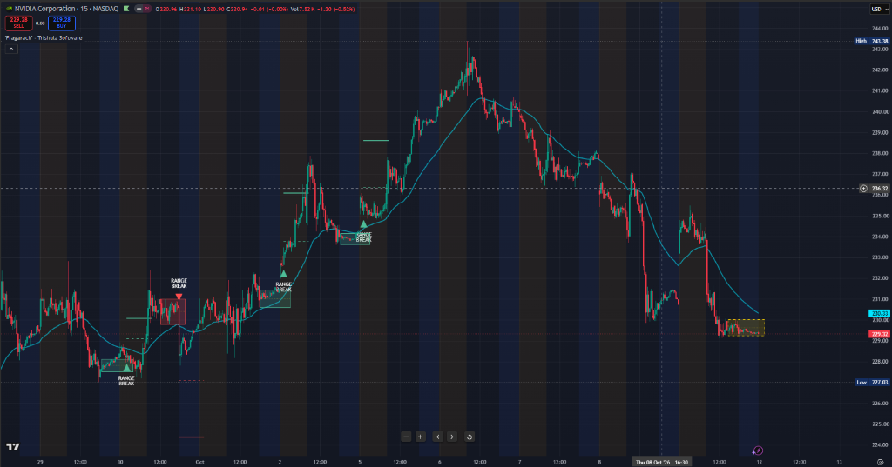
Detects institutional coiling by requiring Bollinger Bands (20, 2.0) to contract strictly inside Keltner Channels (20, 1.5 ATR). Simultaneously enforces ATR compression width (≤ 1.8x 14-ATR) over a rolling 10-bar window, plotting gold dashed equilibrium zones.
Eliminates single-bar fakeouts and liquidity traps. Bar 1 must close outside the squeeze with RVOL ≥ 1.25. Bar 2 must print follow-through (close > Bar 1 close for bulls, close < Bar 1 close for bears). If price falls back into the box, the breakout state auto-resets.
Automatically projects 1x (dashed) and 2x (solid) range height expansion targets from the breakout boundary. Integrates a 50-EMA macro corridor to classify breaks as trend continuations or high-risk exhaustion reversals.
'Galveira' | Dynamic S/R & False Breakout / Trap Engine
Reverse-engineered and upgraded from Max Options Trading's "Pivot Hunter Pro". Galveira anchors real-time swing highs and lows, applies an ATR-based cluster pruning algorithm to prevent chart clutter, detects false breakout liquidity traps with visual "TRAP" beacons, auto-adjusts levels to encompass sweep wicks, and renders clean gold polarity flips (FLIP-SUP / FLIP-RES) upon verified structural penetration.
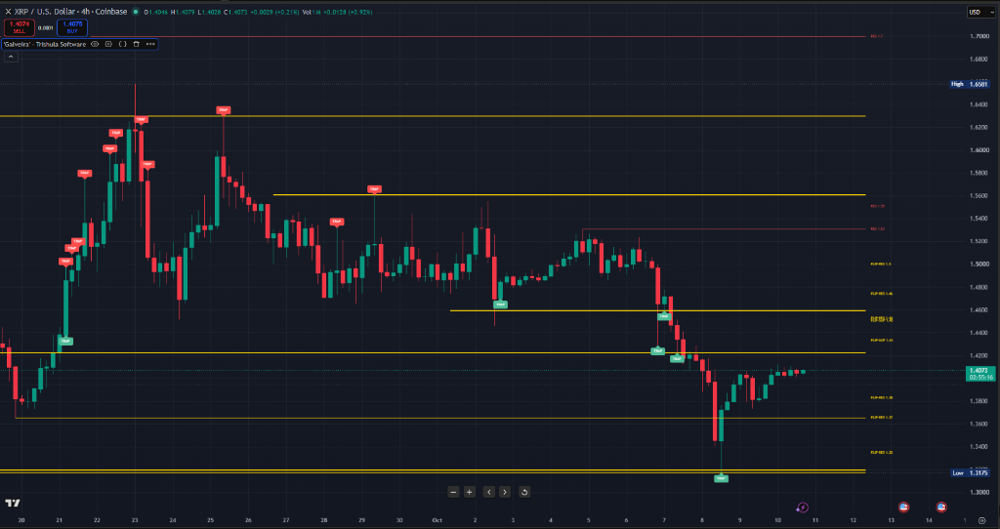
Tracks structural pivot highs and lows using 5-bar left strength and 3-bar right confirmation. Levels dynamically project forward across time, thickening in stroke weight when validated by 2 or more touches.
Exposes retail liquidity traps. When price wicks beyond a major level but closes back inside the zone, Galveira prints a red or green "TRAP" marker and auto-adjusts the level to encompass the peak wick coordinate.
When price breaks cleanly past a level by > 0.3x ATR, the level flips polarity to sovereign gold (FLIP-SUP / FLIP-RES). Levels closer than 0.6x ATR are pruned to guarantee clean, institutional readability.
'Murgleis' | ICT Liquidity Sweep, MSS & Fair Value Gap Engine
Named after the legendary sword of chivalric epics renowned for cutting through treasonous deceit with its glowing carbuncle pommel. Murgleis unmasks institutional stop-hunts across Buy-Side (BSL) and Sell-Side (SSL) liquidity pools, captures decisive Market Structure Shifts (MSS / CHoCH), renders forward-projecting Fair Value Gaps (FVG) with wick mitigation tracking, and fires high-conviction FlowX Long/Short convergence signals.
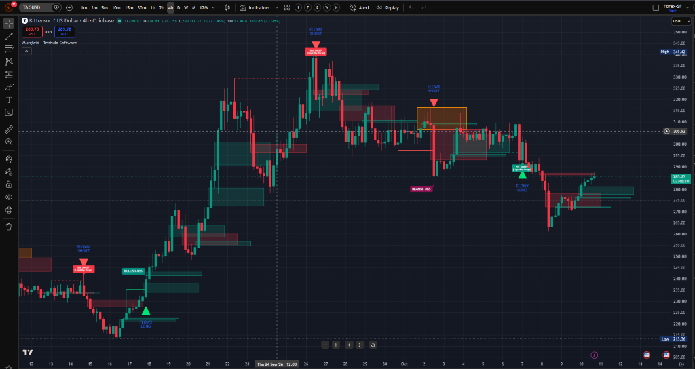
Detects aggressive stop-runs where price wicks beyond previous swing highs (Buy-Side Liquidity) or lows (Sell-Side Liquidity) but fails to print a body close. Identifies instant institutional distribution or accumulation.
Triggers when price commits a full candle close beyond an opposing swing anchor, signaling a true Change of Character (CHoCH) and structural regime shift with zero lagging moving-average dependency.
Calculates three-bar inefficiencies [low > high[2] or high < low[2]] to project forward Fair Value Gaps with wick fill mitigation. Confluence triggers FlowX Long & Short setups ready for automated Discord webhooks.
Q-Matrix Options Intelligence | Institutional Derivatives & Flow Telemetry
Engineered to reverse-engineer dealer gamma exposure (GEX), market maker delta-hedging constraints, and institutional options block activity in real-time. Q-Matrix calculates dealer gravity corridors, zero-gamma inflection pivots, Max Pain gravitational pinning horizons, multi-expiry IV skew surfaces, and high-velocity unusual options volume (Vol/OI) anomalies across major equities, ETFs, and indices.
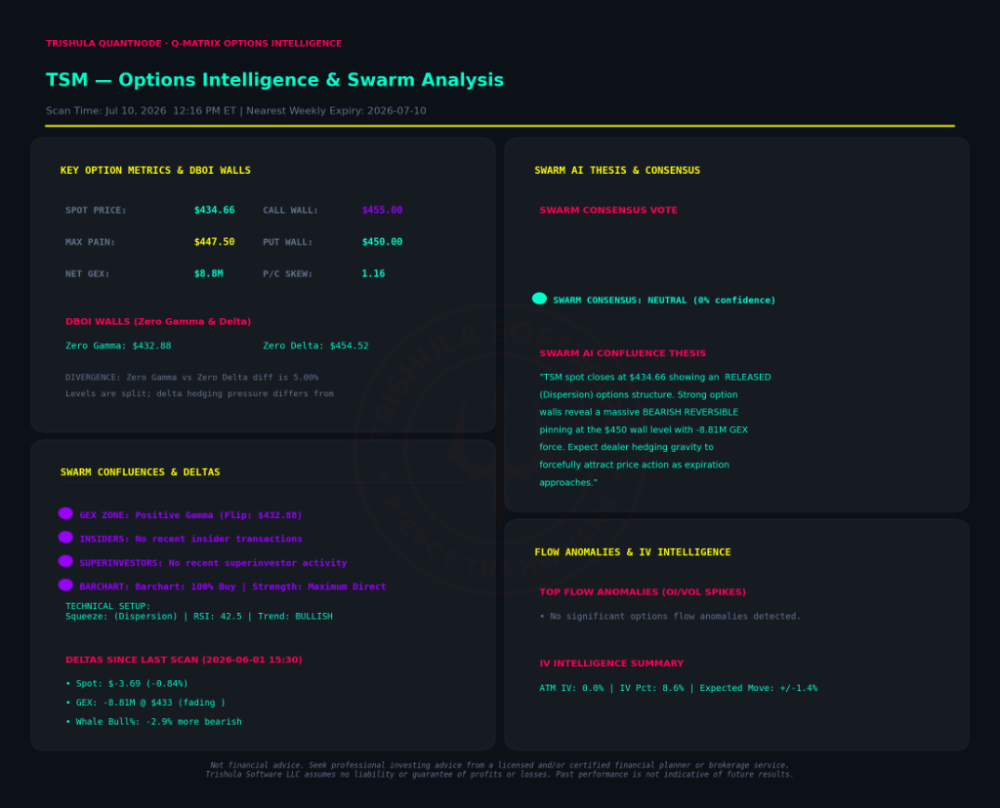
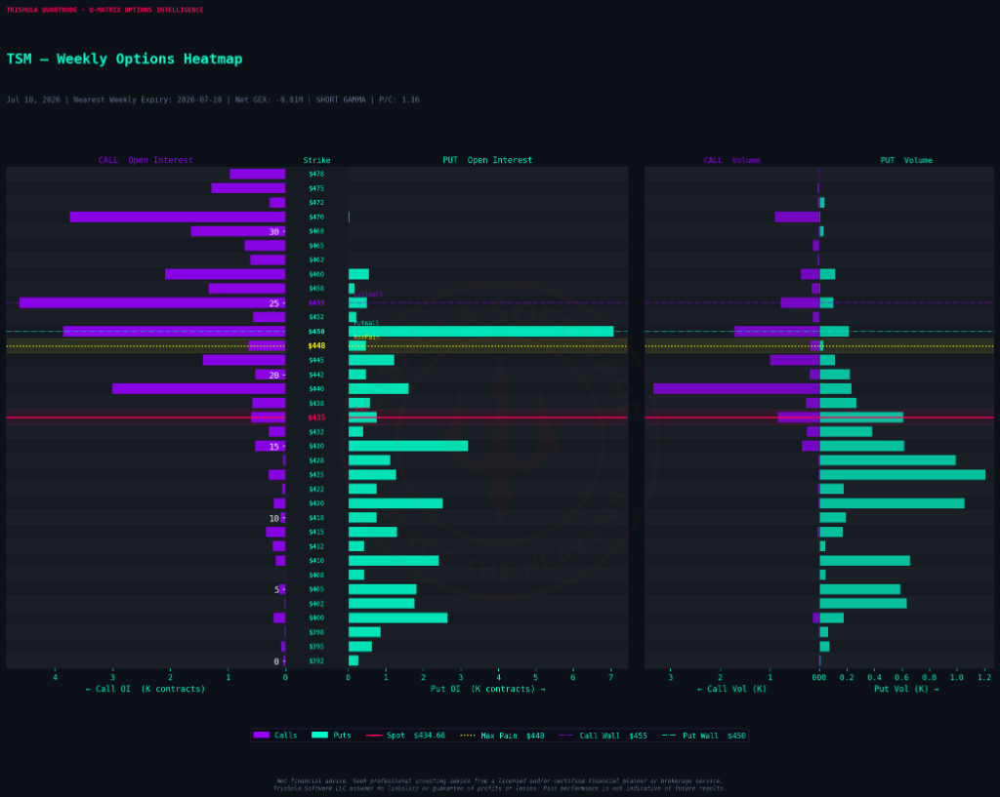
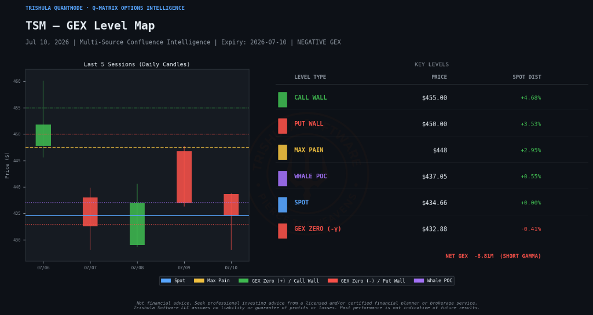
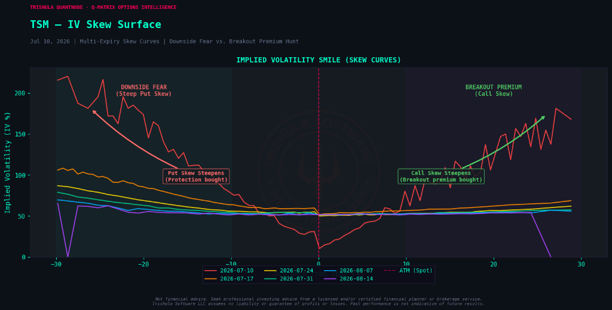
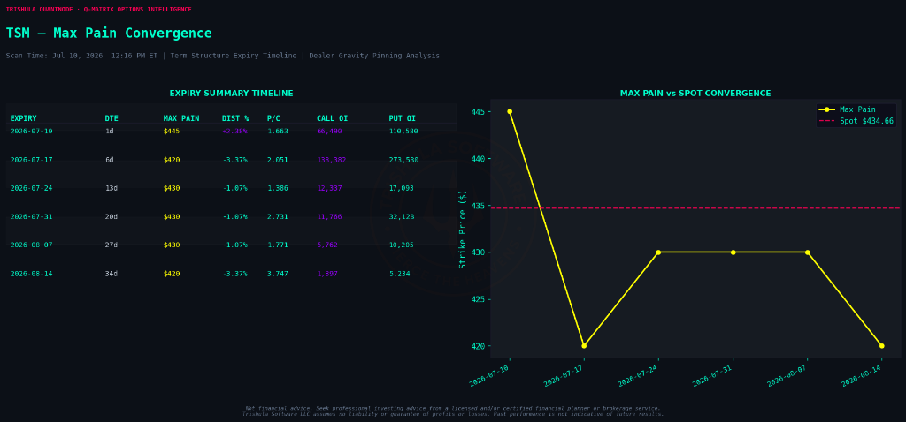
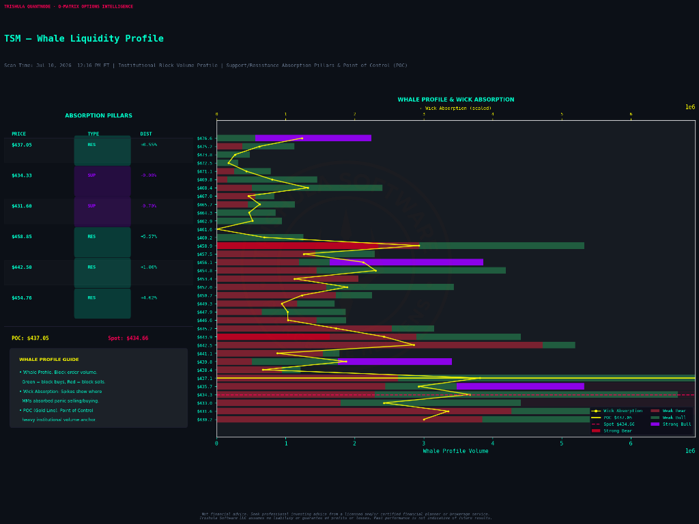
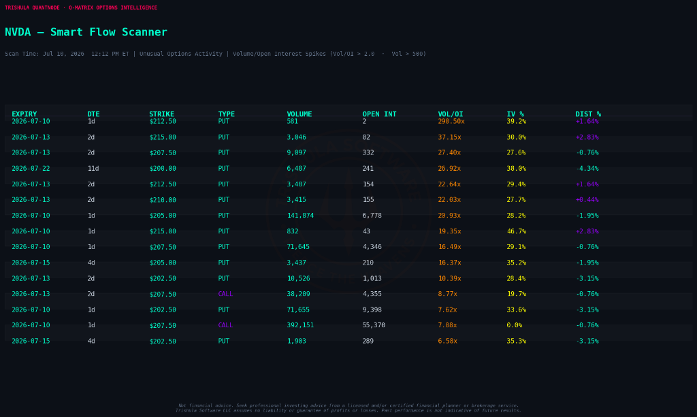
Quantifies second-order price sensitivity across all open strike contracts. Identifies the exact Zero Gamma line where market maker delta hedging flips from dampening volatility (Positive Gamma) to accelerating market selloffs (Negative Gamma).
Maps 3D Implied Volatility smiles across multiple contract expiries. Separates systemic tail-risk downside put hedging demand from aggressive upside call convexity bidding to pinpoint turning points and gamma squeezes.
Calculates cumulative dollar loss for all option buyers across the entire open interest matrix. Plots the term structure of expiration pinning levels, revealing the strike where market makers retain maximum option premium decay.
Real-time algorithmic scanner isolating high-conviction institutional sweeps and multi-exchange block order flow. Filters noise by targeting contracts with Vol/OI exceeding 2.0x and minimum volume thresholds.
RDM Order Blocks (RDM-OB) | Institutional Support & Resistance Order Block Engine
Engineered to isolate institutional origin candles, unmitigated order blocks, and dynamic supply/demand zones with precision. Built natively in Pine Script v5, RDM-OB isolates aggressive market order absorption, embeds internal buy/sell activity sub-boxes directly inside blocks, tracks 50% equilibrium dashed mid-lines, and scans across 11 timeframe horizons for institutional entry confirmation.
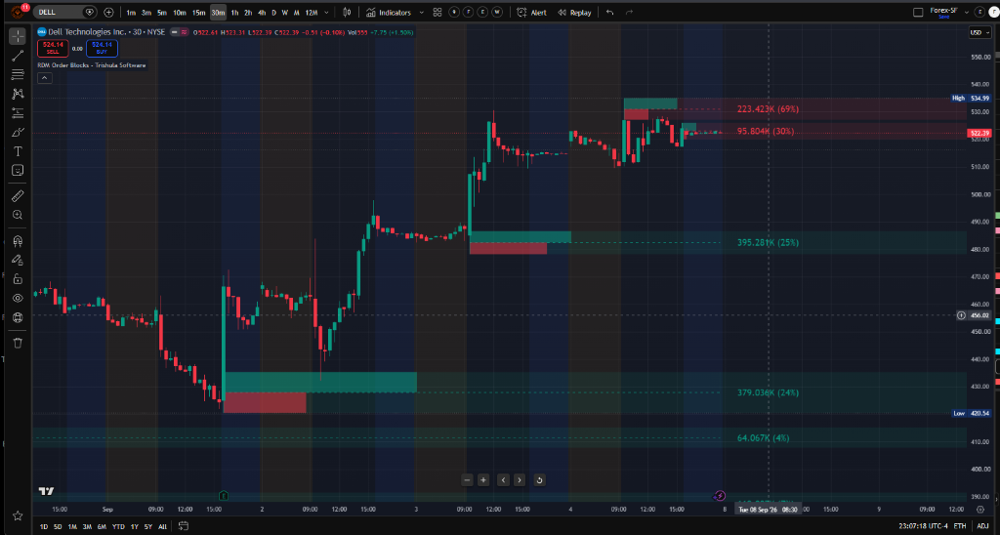
Isolates institutional accumulation and distribution bases by synchronizing volume pivot peaks (ta.pivothigh(volume, len, len)) with directional range extremes. Plots active unmitigated order blocks that persist until verified mitigation.
Deconstructs internal aggressive buying vs. passive limit order absorption within each block. Generates dual-tone sub-boxes (obactup / obactdn) utilizing dynamic UMT bar tracking to visualize institutional liquidity absorption.
Employs three flexible mitigation protocols (Close, Wick, Avg). Automatically projects dashed 50% equilibrium mid-lines across all active blocks to test retest penetration and mitigate exhausted zones.
Real-time alerting engine monitoring 11 continuous horizons: 1m, 3m, 5m, 15m, 30m, 60m, 240m, D, W, M, 12M. Triggers granular alerts across 3 multi-tier channels for Block Created, Price Inside Block, and Block Mitigated.
Trident-3 MTF Order Block System | Institutional Multi-Timeframe Liquidity Engine
Engineered to map institutional liquidity footprints, order block mitigation dynamics, and multi-timeframe supply/demand hierarchies in real-time. Built natively in Pine Script v6, Trident-3 runs three concurrent order block engines (Current Chart + MTF Overlay 1 + MTF Overlay 2), embeds buy/sell activity absorption footprints directly inside blocks, calculates visible order volume percentage metrics, and scans across 11 time horizons for precision execution.
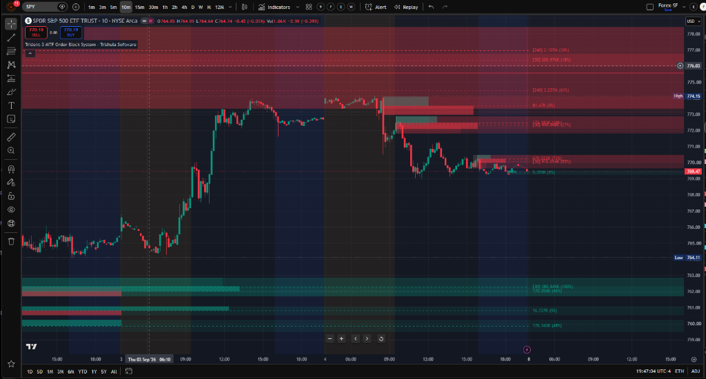
Executes three independent order block pipelines simultaneously: Current Chart timeframe, MTF Overlay 1 (e.g. 30m/60m), and MTF Overlay 2 (e.g. 240m/4h). Utilizes non-repainting higher-timeframe data requests via request.security() to construct institutional multi-tier supply/demand levels.
Offers flexible order block construction via dynamic ATR coordinate expansion (h_len - 1 * atr[len]) or Full candle body bounds. Automatically renders dashed 50% equilibrium mid-lines across all active blocks to test retest penetration and mitigation levels.
Deconstructs internal aggressive buying vs. passive limit order absorption within each block. Generates dual-tone sub-boxes (obactup / obactdn) that visually reveal whether institutional market makers absorbed panic selling or distributed into aggressive liquidity surges.
Comprehensive real-time alerting engine scanning 11 continuous horizons: 1m, 3m, 5m, 15m, 30m, 60m, 240m, D, W, M, 12M. Triggers granular webhook notifications for Block Created, Price Inside Block, and Block Mitigated/Broken events across all three engines.
Dynamic Fibonacci Volatility Expansion, Dual SMMA & Momentum Cluster Terminal
Built as the foundational execution base for the layered Cloud Splitter quantitative architecture. Operates via an iterative ATR-smoothed Smoothed Moving Average (SMMA) engine, projecting 3-tier golden ratio Fibonacci volatility bands (1.618, 2.618, 4.236) alongside dynamic slope angle forward projections (extend = 30). Integrated with an agile 7-period Neon Fuchsia SMMA (#FF00FF), an RSI-10 / MACD (12, 26, 9) cluster confirmation system with Bullish/Bearish "50" centerline flags, high-velocity RSI displacement horizontal corridor generators, and algorithmic top/bottom tier liquidity sweep detection.
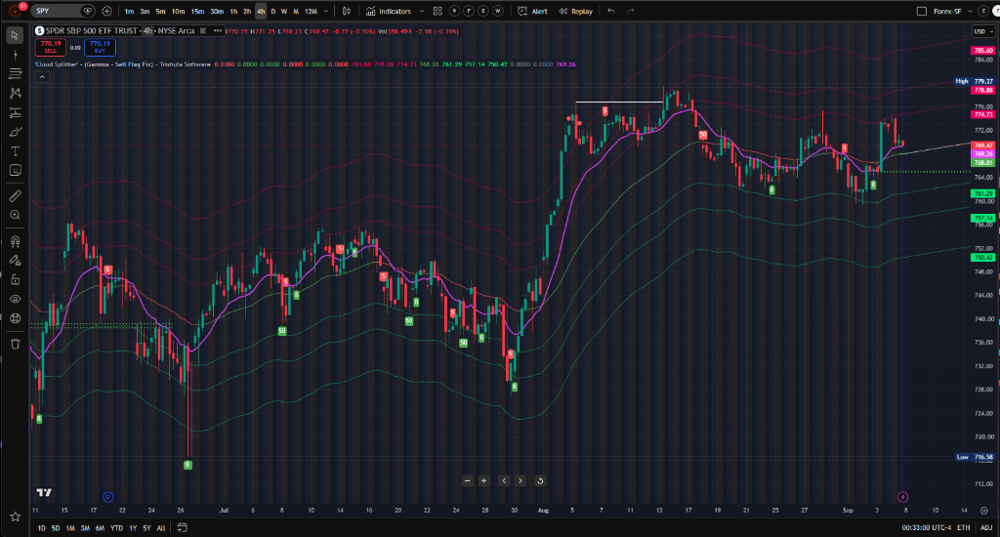
#e60060 Rose · 1.618 / 2.618 / 4.236)
Fibonacci Bottom Bands: Lower Value Envelopes (Lime Green · 1.618 / 2.618 / 4.236)
Fast SMMA (7): Neon Fuchsia (#FF00FF) Agile Intrabar Price Flow
Middle SMMA (20): Smoothed Dynamic Trendline (Green Bull / Red Bear)
"50" Momentum Flags: RSI Centerline Crossout from Exhaustion (Bullish / Bearish)
Cluster Signals: MACD-Confirmed Cluster Executions (B Buy / S Sell)
Liquidity Sweeps: White Dynamic Corridor Breakouts at Tier-3 Extremes
RSI Velocity Corridors: Dotted Projection Levels on Sharp Velocity Shifts (≥15 Pts)
Iteratively calculates SMMA smoothed ATR (smma(ta.atr(200), 100)) to construct 3 dynamic Fibonacci expansion corridors (1.618, 2.618, 4.236). Extends 30 bars forward using real-time linear slope vector mechanics.
Combines a 20-period baseline SMMA trendline (green uptrend, red downtrend) with a high-velocity 7-period Neon Fuchsia (#FF00FF) overlay to capture immediate trend acceleration across volatility bands.
Fires Bullish and Bearish "50" flags on RSI centerline crossouts from extreme overbought (>55) and oversold (<45) zones. Concurrently tallies consecutive cluster strength confirmed with MACD (12, 26, 9) crossovers to plot high-conviction "B" and "S" badges.
Identifies structural exhaustion sweeps when pivot highs pierce above Tier-3 Fibonacci top (fibTop3) or pivot lows breach below Tier-3 bottom (fibBott3). Projects 50-bar dotted corridors on rapid RSI velocity shifts (≥15 points).
Dual-Horizon Structural Momentum & Divergence Terminal
Engineered to pinpoint high-probability reversal inflection points and structural momentum shifts across dual horizons: Segment 'Alpha' (10-bar swing lookback, 5–60 bar range) and Segment 'Gamma' (2-bar rapid tactical sniper lookback, 2–30 bar range). Built natively in Pine Script v5, the RDM Composure Oscillator integrates an institutional 4-state color gradient MACD histogram, multi-horizon pivot range verification, directional label markers (Regular & Hidden Bull/Bear), and integrated 14-period RSI climax exhaustion signals (Buy at 30 / Sell at 70) with 10 dedicated alert webhook conditions.
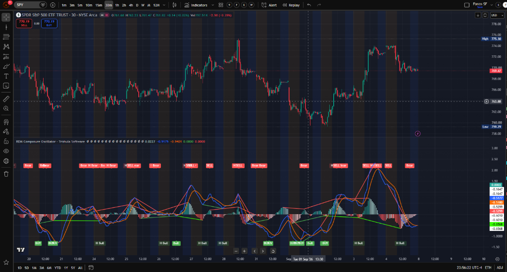
Bull) & Hidden (H Bull) Swing Troughs
Bearish Divergences: Regular (Bear) & Hidden (H Bear) Momentum Peaks
RSI Oversold Climax: Green BUY Reversal Crosses Below 30
RSI Overbought Climax: Red SELL Reversal Crosses Above 70
HD Histogram: 4-Stage Volume Flow Above & Below Zero
Scans institutional swing momentum pivots using a 10-bar left/right lookback window over 5 to 60 bar scan horizons. Maps structural lower lows in price against higher oscillator lows (Regular Bull) and higher lows against lower oscillator lows (Hidden Bull continuation).
Deploys an aggressive 2-bar left/right pivot detector across a 2 to 30 bar evaluation window directly on the standard MACD line. Captures fast micro-divergences and tactical inflection points before larger timeframes confirm.
Plots multi-tier color-coded momentum volume: Above-Zero Growing (#26A69A), Above-Zero Falling (#B2DFDB), Below-Zero Growing (#FFCDD2), and Below-Zero Falling (#FF5252). 2px MACD (#2962FF) and Signal (#FF6D00) lines track directional velocity.
Fuses 14-period RSI boundary crossings (30 Oversold / 70 Overbought) directly onto price bars, printing clear BUY / SELL shapes. Equipped with 10 discrete TradingView alert condition webhooks for Alpha, Gamma, and RSI signals.
Precision Momentum Exhaustion & Divergence Terminal
Engineered to pinpoint exhausted market turning points, aggressive distribution climaxes, and hidden structural shifts through a 4-tier overbought/oversold architecture (70 / 77.5 / 85.0 & 30 / 22.5 / 15.0). Built natively in Pine Script v5, The Door Knocker RSI connects structural pivots with live visual divergence line vectors (line.new), projects full-column confluence background illumination (bgcolor), and envelopes momentum with adaptive 14-period moving average smoothing and 2.0 StdDev Bollinger Bands channels.
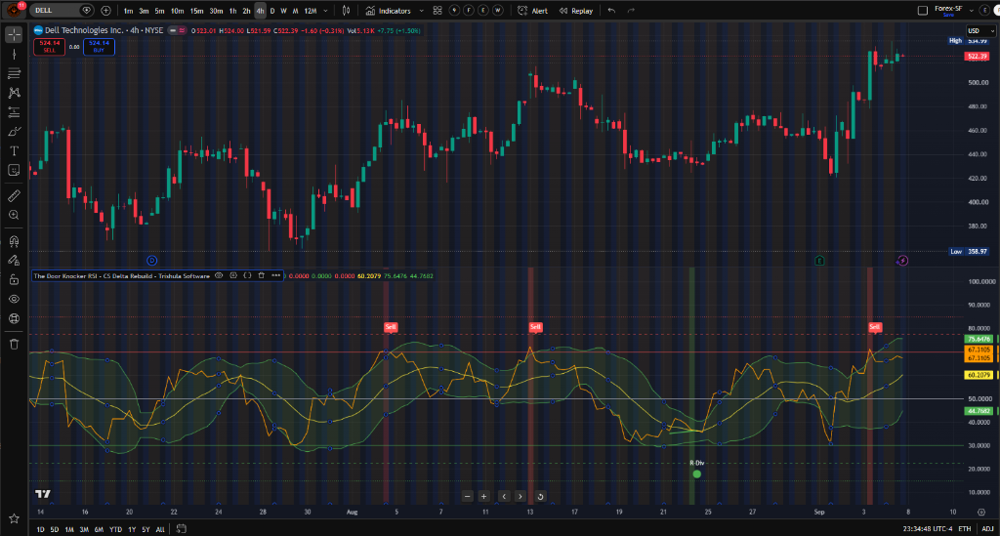
Replaces primitive 70/30 boundaries with an institutional 4-tier step grid: Standard (70/30 solid), High (77.5/22.5 dashed), and Extreme (85.0/15.0 dotted). Isolates climax overextension with dedicated TradingView alert conditions.
Scans price vs. oscillator momentum pivots using a 5-bar lookback window. Projects permanent visual connecting line vectors directly onto the RSI curve (line.new) coupled with R-Div circular markers for structural confirmation.
Fuses momentum crossunders (ta.crossunder(rsi, 70)) and divergence signals into full vertical chart background highlights (bgcolor). Instantly signals institutional distribution zones across the entire price pane.
Envelopes raw RSI velocity with 7 customizable smoothing engines (SMA, SMA + Bollinger Bands, EMA, SMMA, WMA, VWMA). Renders an adaptive 2.0 StdDev volatility channel to identify momentum compression before explosive price expansion.
Multi-Timeframe Divergence & Extreme Momentum Engine
Engineered to isolate institutional turning points through dual-timeframe Commodity Channel Index (CCI) dynamics, step-gradient extreme threshold triggers (±200 to ±500), and an institutional 8-morphology divergence matrix. Powered natively by Pine Script v6, DoubleBack synchronizes primary price action with secondary higher-timeframe momentum (request.security), envelopes the oscillator within adaptive Bollinger Bands volatility channels, and generates pinpoint Class A, B, and C divergence flags across historical swing pivots.
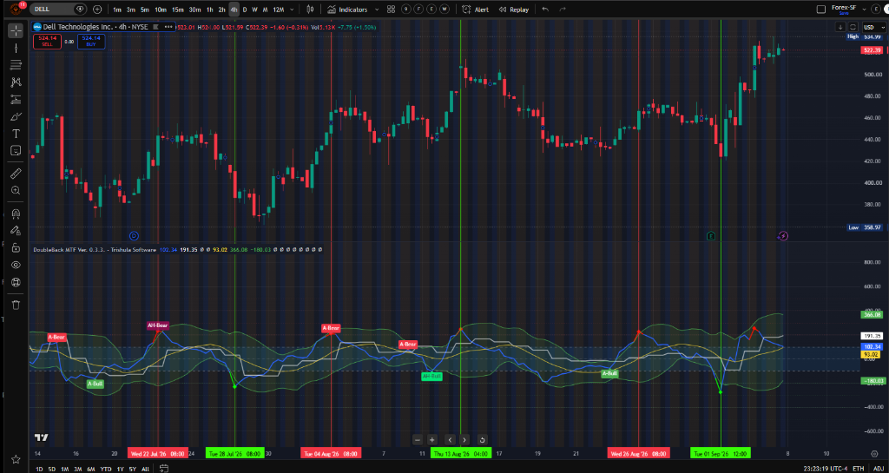
Executes deep algorithmic divergence discovery across 8 distinct structural classes. Detects Class A Snipers (A-Bull, A-Bear, AH-Bull, AH-Bear), Class B Double Price (B-Bull, B-Bear with 0.15% tolerance), and Class C Double Oscillator (C-Bull, C-Bear with 10.0 point tolerance) with zero repainting on pivot confirmation.
Embeds an independent multi-timeframe security pipeline (request.security(syminfo.tickerid, htf_res, cci)) overlaying higher-timeframe momentum directly on the current pane. Dynamically color-codes HTF momentum into extreme bull exhaustion (Orange ≥ 200) and bear exhaustion (Purple ≤ -200).
Projects multi-tier dotted threshold bands at ±200, ±300, ±400, and ±500. Automatically evaluates crossover and crossunder momentum spikes (ta.crossover / ta.crossunder), plotting pinpoint diamond markers and firing discrete TradingView alerts on explosive momentum breaches.
Envelopes the raw CCI oscillator within 7 institutional moving average smoothing types (SMA, SMA + Bollinger Bands, EMA, SMMA, WMA, VWMA) coupled with adaptive standard deviation bands. Visualizes momentum compression and volatility expansion directly inside the oscillator before price breakout confirmation.
Project Idris — v0.6 Static OHLC Architecture | 12-Engine Reversal Execution System
Engineered to isolate high-probability institutional reversal pivots by aggregating 12 independent quantitative vectors into a unified 12-point confluence score. Built natively in Pine Script v6, Idris isolates market structure shifts, fair value gaps, liquidity sweeps, order blocks, and multi-timeframe momentum, projecting dynamic ATR stop/target corridors alongside static 4-line OHLC strike candle flags and an interactive real-time telemetry HUD.
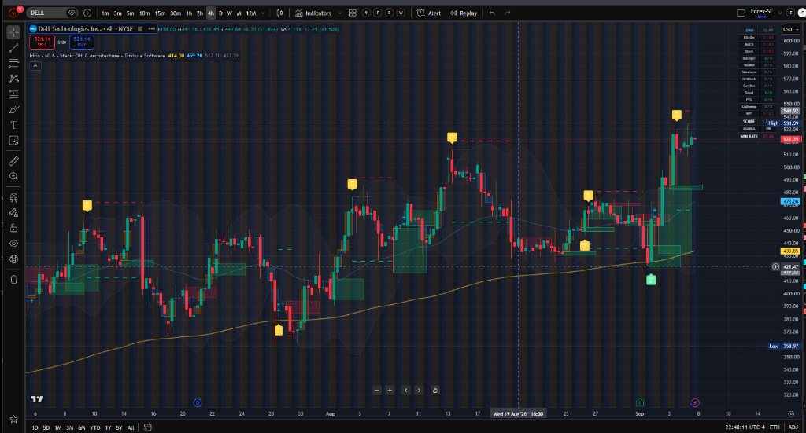
Aggregates 12 independent mathematical dimensions: RSI (+ Divergence), MACD Crosses, Stochastic Extremes, Bollinger Penetration, Volume Spikes, Market Structure Shifts (MSS/BOS), Order Blocks, Candlestick Formations, EMA 200/50 Regimes, Fair Value Gaps (FVG), Liquidity Sweeps, and 60m MTF momentum.
Anchors static 4-tier horizontal benchmark lines (Open, High, Low, Close) directly onto the signal strike candle for a fixed 5-bar duration. Establishes immediate microstructure retest and liquidity clearance levels without repainting or recalculating.
Projects 1.5x ATR Stop Loss and 2.5x ATR Take Profit tracking corridors that dynamically extend forward up to 50 bars. Evaluates high/low touches in real-time, instantly logging win/loss outcomes into the onboard performance database to calculate live verified win rates.
Renders an institutional 16-row diagnostic dashboard in the top-right corner of the chart. Displays bull/bear contribution readouts for all 12 analytical engines, the current cumulative bar score, total signals logged, and the dynamic cumulative win rate percentage.
'The Madam' | Boring/Explosive Candle ID System
Engineered to isolate institutional energy transfer by quantifying the shift between microstructure equilibrium and aggressive volatility expansion. By classifying wick-dominated "Boring" indecision candles and detecting verified "Explosive" momentum injections (≥1.5x body expansion with >50% total range dominance), The Madam anchors forward 10-bar retest corridors and autonomously purges mitigated lines in real-time.
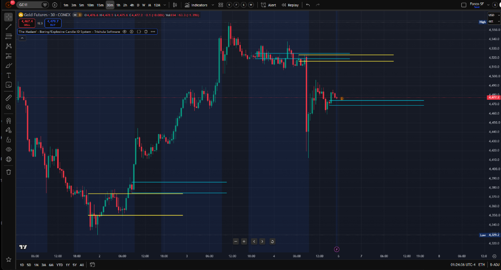
Boring Candle Classifier
Identifies institutional coiling and absorption regimes where neither buyers nor sellers establish directional displacement. Classifies a candle as isBoring when the body is bounded by wick span (candleBody ≤ (upperWick + lowerWick) * 0.5) and both upper and lower wicks satisfy symmetric extension thresholds (≥50% of body height).
Explosive Impulse Engine
Detects sudden injections of aggressive taker liquidity. Validates isExplosive status by enforcing dual mathematical gates: the candle body must capture at least 50% of the bar's total high-to-low range (candleBody ≥ candleRange * 0.5) AND expand by at least 150% over the preceding candle body (candleBody ≥ candleBody[1] * 1.5).
Directional Range Cross Triggers
Fires decisive execution signals when kinetic expansion breaks beyond key structural thresholds. bullishCross triggers when an explosive bullish bar drives above the prior candle's high (close > high[1]), while bearishCross triggers when an explosive bearish bar violently collapses below the prior candle's low (close < low[1]).
Engulfing Confluence Filters
Guards execution algorithms against retail bear/bull traps. Synchronizes with isBullishEngulfing and isBearishEngulfing states across previous candle indices. Ensures that forward corridors are anchored to true origin inflection candles (either confirmed boring compression or opposite-polarity institutional absorption traps).
Forward Projected S/R Corridors
Upon confirmed directional cross off a qualified base, instantiates vector projection lines (topLine and bottomLine) anchored to the origin candle's exact high and low extremes. Extends these channel boundaries forward across lineLength = 10 bars, charting precise institutional retest and invalidation corridors.
Retest Mitigation Garbage Collector
Prevents historical chart clutter and false re-entries via automated line lifecycle management. When deleteLinesAfterFill is enabled, actively tracks real-time price intersection through active corridors. As soon as incoming price action fills and mitigates the channel, the lines are immediately purged from chart memory.
// 'The Madam' Automated Execution Trigger { "passphrase": "THE_MADAM_ACTUAL_01", "action": "BUY", "pair": "GC1!", "tf": "30", "signal_type": "BULLISH_EXPLOSIVE_CROSS", "base_type": "BORING_COMPRESSION_BASE", "entry": 2918.40, "corridor_high": 2919.80, "corridor_low": 2914.20, "auto_purge": true }
'The Madam' Whitelist & License Access
'The Madam' is proprietary institutional IP engineered by Trishula Software. To request invite-only TradingView username access or deploy high-frequency webhook listeners directly into automated futures or crypto trading bots, submit a whitelist application below or open an enterprise architecture consultation.
Experimental Volume Profile, Options GEX Heatmap & Liquidity Terminal
Engineered as a hybrid institutional order flow microstructure and derivatives surface engine. Project: Vajra 1.1 constructs multi-layer whale volume profiles, modeled options gamma exposure (GEX) heatmaps, net delta walls, and wick absorption profiles. Built natively in Pine Script v6 with an embedded Black-Scholes Greeks engine and Horner's polynomial normal CDF approximation, Vajra maps 97th-percentile whale volume, projects persistent horizontal S/R absorption ribbons, and calculates the exact algorithmic Options Max Pain pin level across any asset.
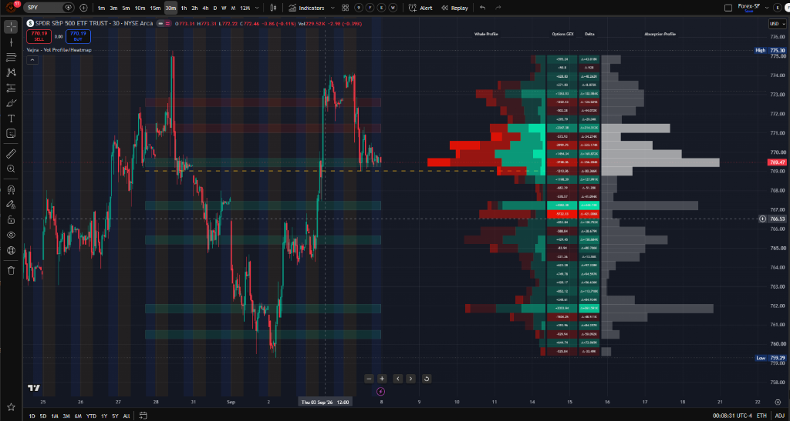
#00F5D4) & Bearish (#FF0054) Stacked Bins
Options GEX Heatmap: Black-Scholes Modeled Gamma Walls (Cyan Pin / Magenta Vol)
Net Delta Profile: Strike-level Directional Hedging Pressure (Δ±)
Wick Absorption: Passive Limit Order Absorption Histogram
Point of Control: Amber Line (#FFD166)
Options Max Pain: Minimal Payout Strike Line (#FFB703)
Samples lower-timeframe intrabar volume across a 200-bar lookback partitioned into 35 vertical price bins. Applies a 97th-percentile volume threshold filter to separate massive institutional whale blocks from retail noise, computing Point of Control (POC) and Value Area (VA).
Simulates full options surface Greeks on-chart via Horner's polynomial approximation (~1e-7 precision). Computes Net Gamma Exposure at each strike midpoint: Green Positive Gamma walls enforce dealer mean-reversion pins; Red Negative Gamma walls trigger accelerating volatility expansions.
Synthesizes institutional call and put open interest from directional order volume to calculate continuous strike-level Net Delta (Call OI × Call Δ + Put OI × Put Δ). Visualizes dealer inventory rehedging pressure formatted as compact Δ± numerical badges.
Isolates aggressive market order absorption occurring strictly in candle wicks. Peak absorption bins project transparent multi-bar S/R zones across historical candles, while the algorithmic Max Pain solver finds the exact strike that minimizes option buyer payouts, plotted as a dashed golden line.
Caladbolg/SMC-R | Institutional Smart Money & Order Flow Engine
Engineered for institutional order flow architecture and structural execution across Equities, Futures, and Crypto. Unifies multi-horizon Inside & Swing Structure (BOS / CHoCH), protected vs. targeted liquidity extremes, delta volume-filtered Support/Resistance boxes, the 4 Pillars of Supply and Demand (RBR, DBD, RBD, DBR), projected bi-directional trendlines, and Multi-Timeframe (MTF) neon glow projection.
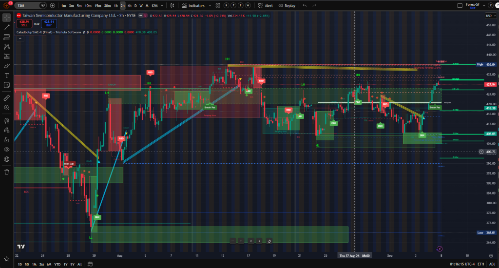
Multi-Horizon SMC-R Core
Dual-track structure mapping. Inside Structure (5-bar leg) captures micro-level order flow transitions, while L.T. Swing Structure (50-bar leg) dictates institutional trend bias. Auto-identifies Break of Structure (BOS), Change of Character (CHoCH), Protected Highs/Lows (Strong Pivots), and Targeted Highs/Lows (Weak resting liquidity pools).
4 Pillars of S&D (RBR/DBD/DBR/RBD)
Autonomous supply and demand base classification engine. Maps RBR (Rally-Base-Rally) and DBD (Drop-Base-Drop) trend continuation footprints, plus DBR (Drop-Base-Rally) and RBD (Rally-Base-Drop) trend exhaustion reversals. Filters candles by directional health (>60%) and enforces a strict 80% maximum base retracement boundary.
Projected Geometric Trendlines
Multi-line adaptive trendline projection engine. Extrapolates calibrated directional channels from validated swing pivots into future candle space using linear slope calculus (c_slope). Renders background fills and automatically flags bullish/bearish breakouts with directional triangles (Breaking Up / Breaking Down).
Delta Volume S/R Boxes
Calculates cumulative directional volume delta (c_upAndDownVolume) across 20-period swing lookbacks. Shuts down arbitrary horizontal lines by rendering dynamic support and resistance boxes whose fill opacity reflects institutional volume depth. Automatically tags support/resistance holds and flip levels (Break Sup / Break Res).
Multi-Timeframe Glow Levels
Queries higher-timeframe extremes via keyless security calls across 4 concurrent horizons: 240-Minute (4H), Daily (D), Weekly (W), and Monthly (M). Emits dual-layer neon glow beams (wide blur + precision laser core) projected into the chart's right margin void to eliminate chart clutter.
Apex & Trench Reversal Zones
Continually recalculates trailing market extremes (trailing.top / trailing.bottom). Automatically bounds high-probability turning points by establishing the 95% Apex Potential Reversal Zone (exhaustion supply ceiling) and the 95% Trench Potential Reversal Zone (exhaustion demand floor), bisected by a glowing equilibrium midpoint line.
// Caladbolg/SMC-R Automated Execution Trigger { "passphrase": "CALADBOLG_SMCR_FINAL", "action": "BUY", "pair": "TSM_USD", "tf": "120", "signal_type": "DBR_REVERSAL_DEMAND", "structure": "SWING_BOS", "entry": 421.66, "sl": 408.05, "tp": 436.04, "zone": "TRENCH_REVERSAL_ZONE" }
Caladbolg/SMC-R Whitelist & License Access
Caladbolg/SMC-R is proprietary institutional IP engineered by Trishula Software. To request invite-only TradingView username access or deploy Caladbolg webhooks into private hedge funds or trading desks, submit a whitelist application below or open an enterprise architecture consultation.
Multi-Layer Execution, Triple Hull WaveTrend & 9-Factor Confluence Terminal
The foundational namesake of Trishula Quantitative Systems and the first complete quantitative architecture engineered from inception to execution. Built natively in Pine Script v5, The Mighty "Trishula" unifies six institutional subsystems into a single sovereign execution terminal: the volatility-adaptive RDM Proc Buy/Sell Engine with 4-price Doji filtration, an ultra-smooth Triple Hull Moving Average (HMA/EHMA/THMA) WaveTrend ribbon with 3D gradient fills, an automated multi-test geometric Cup Breakout/Breakdown system, an institutional 9-Factor Market Confluence HUD table (MACD, Vortex, Momentum, Stoch RSI, RSI, PSAR, DMI, MFI, Fisher Transform), Zero-Lag (ZLMA) DualWave retest boxes with micro-arrow pullback signals, and an adjustable 4-tier Moving Average matrix with dual crossover alert engines.
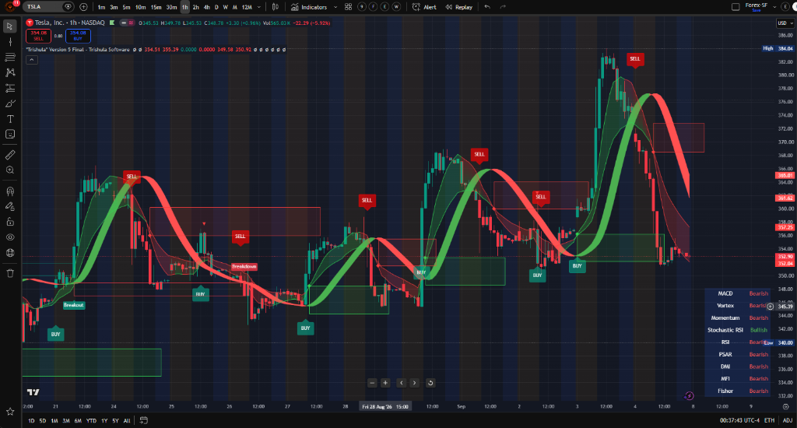
BUY #089981) & Bearish (SELL #ff0000) Labels
Directional Bars: Bullish (#089981) & Bearish (#f23645) Candlestick Tint
WaveTrend Ribbon: Triple Hull (HMA/EHMA/THMA) 3D Smoothed Volatility Waves
9-Factor HUD Table: Real-time Multi-Engine Confluence Matrix (Bottom-Right)
Cup Breakouts: Multi-Test Geometric Price Corridors (Breakout / Breakdown)
DualWave Retest Boxes: Zero-Lag (ZLMA) Dynamic Pullback Zones
Micro Retest Signals: Upward (▲) & Downward (▼) Pullback Arrows
Calculates volatility-adaptive trailing stop boundaries (atr = mult * ta.atr(10)) with dedicated 4-price Doji filtration to protect stop continuity during zero-range prints. Tints candles dynamically and triggers high-contrast BUY and SELL labels with native alert conditions.
Multi-algorithm Hull moving average engine featuring standard HMA, exponential EHMA, and triple THMA (3*WMA(len/3) - 2*WMA(len/2) - WMA(len)). Renders an ultra-smooth 3D-shaded trend ribbon between MHULL and SHULL with price cross alert triggers.
Real-time 2x9 corner telemetry HUD evaluating MACD (12, 26, 9), Vortex (VMP/VMM), Momentum, Stochastic RSI, RSI, PSAR, DMI (DI+/DI-), MFI, and Fisher Transform. Evaluates consensus across all 9 subsystems and fires global All-Bullish / All-Bearish alerts.
Monitors multi-touch structural resistance and support cups through pivot high/low array tracking (phval / plval). Validates consolidation zones requiring a minimum of 2 test bounces before drawing 4-sided geometric channel corridors and breakout labels.
Zero-Lag Moving Average (ZLMA = EMA(close + (close - EMA), length)) paired with 200 ATR-scaled retest boxes. Generates micro-level secondary entry points with upward (▲) and downward (▼) pullback verification arrows.
Four fully customizable moving average tiers (MA 1, MA 2, MA 3, MA 4) supporting EMA, SMA, and WMA across customizable lookbacks (20, 50, 100, 200). Equipped with dual golden/death cross detection systems (System 1: MA 1 × MA 2, System 2: MA 3 × MA 4).